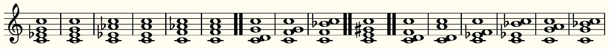

Section 3 Scales
The mathematics of musical scales and, by extension, intervals between two notes has been extensively studied (see, e.g., [5, 12] for two recent papers). A key feature of an interval is the frequency ratio between the two notes. Vastly simplified (and one has to be careful, for various reasons), our ears seem to prefer simple ratios, such as \(2 \rat 1\) (octave), \(3 \rat 2\) (perfect fifth), \(4 \rat 3\) (perfect forth), etc. Next we address the (decision) problem of assigning interval fractions. To illustrate the subtleties involved, it is helpful to have a sample scale to follow along with; we use one of the most common just scales given in Table 3.1, due to Johannes Kepler and known as Kepler’s Monochord No. 2, transposed down a fifth [1]; the following section will discuss analogous results for various other scales (see also \url{https://brefeld.hier-im-netz.de/konsonanz.html}).
1
In its most restrictive definition, a \Def{just scale} is one with frequency ratios only involving the primes 2, 3, and 5. Kepler’s just scale is based on a ratio \(4 \rat 5 \rat 6\) for each major chord (C-E-G, F-A-C, and G-B-D); this is precisely the ratio in which the major chord appears within the harmonic spectrum of a tone. Minor third and minor seventh follow then by symmetry, and the ratio for F\sh is the product of the ratios for a major third and a whole tone.
| C | C\sh | D | E\fl | E | F | F\sh | G | G\sh | A | B\fl | B |
| \(1 \rat 1\) | \(16 \rat 15\) | \(9 \rat 8\) | \(6 \rat 5\) | \(5 \rat 4\) | \(4 \rat 3\) | \(45 \rat 32\) | \(3 \rat 2\) | \(8 \rat 5\) | \(5 \rat 3\) | \(16 \rat 9\) | \(15 \rat 8\) |
The inversion equivalence (b) dictates that the interval fraction of a given interval in a chord and that of its complementary interval are equal. For example, the first F-major chord in Figure 4.1 features a perfect forth between C and F, where the next inversion gives a perfect fifth between these two notes (once more, because we do not distinguish between octaves). Thus the respective interval fractions, i.e., \(h_5\) and \(h_7\text{,}\) must be equal. Based on Table 3.1, the two possible choices for \(h_5 = h_7\) are \(\frac 4 3\) and \(\frac 3 2\text{;}\) we give preference to the frequency ratio whose sum of numerator and denominator is smaller. Thus in this case, \(h_5 = h_7 = \frac 3 2\text{.}\) More generally, we must have \(h_j = h_{ 12-j }\text{.}\) (This mirrors the fact that in \(\ZZ_{ 12 }\) there are only six meaningful nonzero distances.) Our choice of preference results in the interval fractions in Table 3.2.
| \(h_1\) | \(h_2\) | \(h_3\) | \(h_4\) | \(h_5\) | \(h_6\) | \(h_7\) | \(h_8\) | \(h_9\) | \(h_{10}\) | \(h_{11}\) |
| \(\frac{ 15 }{ 8 }\) | \(\frac{ 9 }{ 8 }\) | \(\frac{ 5 }{ 3 }\) | \(\frac{ 5 }{ 4 }\) | \(\frac{ 3 }{ 2 }\) | \(\frac{ 45 }{ 32 }\) | \(\frac{ 3 }{ 2 }\) | \(\frac{ 5 }{ 4 }\) | \(\frac{ 5 }{ 3 }\) | \(\frac{ 9 }{ 8 }\) | \(\frac{ 15 }{ 8 }\) |
We are now all set to compute the weight of a given triad; again, it equals the sum of all numerators and denominators appearing in each interval fraction that we can detect in the triad. For example, the major triad C-E-G features a perfect fifth, a major third, and a minor third; thus its weight equals \(5 + 3 + 5 + 4 + 3 + 2 = 22\text{,}\) summing the numerators and denominators appearing in \(h_3\text{,}\) \(h_4\text{,}\) and \(h_7\text{.}\) Naturally, this number depends only on the distances between the base note and the other two notes, in this case 4 and 7; we will record this triad as the pair \((4,7)\text{.}\) Table 3.3 shows the weights for all twelve equivalence classes: the first row gives the differences \((a,b)\) to the base note for one representative of the equivalence class, the second row sums the numerators and denominators appearing in \(h_a\text{,}\) \(h_b\text{,}\) and \(h_{ b-a }\text{.}\)
2
Birkhoff [3] conceptualized a notion of aesthetic measure of a chord, though it is arguable much less refined.
| \((1,2)\) | \((1,3)\) | \((1,4)\) | \((1,5)\) | \((1,6)\) | \((2,4)\) | \((2,5)\) | \((2,6)\) | \((2,7)\) | \((3,6)\) | \((3,7)\) | \((4,8)\) |
| 63 | 48 | 40 | 37 | 105 | 43 | 30 | 103 | 27 | 93 | 22 | 27 |
The weight gives a (very rough) measure of a chord. Indeed, the “lightest” chord family \((3,7)\) contains major and minor triads. The next three chord families, with weights 27 and 30, are \((2,7)\) (corresponding to a set of lovely chords), \((4,8)\) (corresponding to the tritone), and \((2,5)\) (another lovely chord family). The respective chords are illustrated in Figure 3.4.
